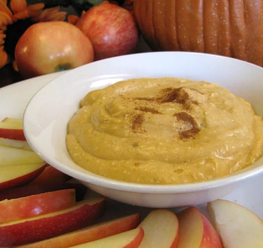

Easy Pumpkin Dip
Home

This is a great recipe for fall. Serve with sliced apples.
- ¾ cup low-fat cream cheese
- ½ cup packed brown sugar
- ½ cup canned pumpkin
- 2 teaspoons maple syrup
- ½ teaspoon ground cinnamon
- Beat cream cheese, brown sugar, and canned pumpkin together with an electric mixer on medium speed in a bowl until light and creamy, 3 to 5 minutes. Add maple syrup and cinnamon and beat until smooth, 1 to 2 minutes. Cover with plastic wrap and refrigerate for 30 minutes.